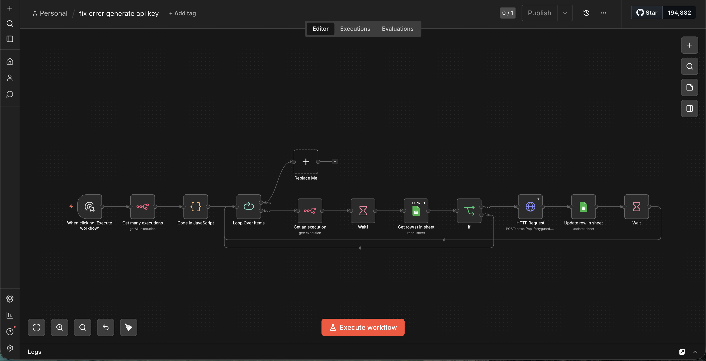

API Key Generation & Onboarding
A two-phase pipeline that onboards ~1,300 candidates and securely issues unique API keys only after they act — gated by an explicit user action, with an automatic retry loop for failures.

01Overview
A provisioning system in two phases: Phase 1 personalizes and sends onboarding emails to candidates from a sheet; Phase 2 waits for the candidate to click an "API access" button, then validates and calls the FortyGuard API to generate and deliver a unique key — with a companion workflow that retries any failed runs.
02Business problem
After collecting ~1,300 candidate applications, the team needed to onboard everyone and securely distribute a unique API key to each — without emailing keys blindly or doing it by hand.
03Architecture
04Workflow
05Screenshots


06AI components
- None — this is a secure provisioning and outreach pipeline (deterministic, not AI-driven), which is exactly what key issuance should be.
07Integrations
- Google Sheets — candidate roster + status.
- Gmail — onboarding + key delivery.
- Webhooks — API-access button.
- FortyGuard provisioning API — HTTP POST.
08Technical challenges
- Secure distribution — keys are generated only after an explicit candidate action via a webhook gate, never emailed proactively.
- JS validation before any provisioning call.
- Status tracking to prevent double-sends.
- A companion retry loop that reprocesses failed executions (Get many executions → re-run).
09Reliability engineering
- Deployment: self-hosted n8n, sheet loop + webhook.
- Monitoring: status tracked in Sheets (contacted / provisioned).
- Error handling: a dedicated retry workflow reprocesses failed executions; Wait nodes pace API calls.
- Validation: JS validation of the request before provisioning.
- Scalability: loops over ~1,300 rows with pacing; keys gated behind user action.
10Business impact
11Lessons learned
Gating provisioning behind an explicit user action (a webhook) made key distribution both secure and auditable — the workflow can prove exactly who requested access and when. A separate retry loop over failed executions kept delivery at ~100% without manual chasing.
12Future improvements
- Add key rotation/expiry.
- A self-serve status page for candidates.
- Alerting on repeated provisioning failures.